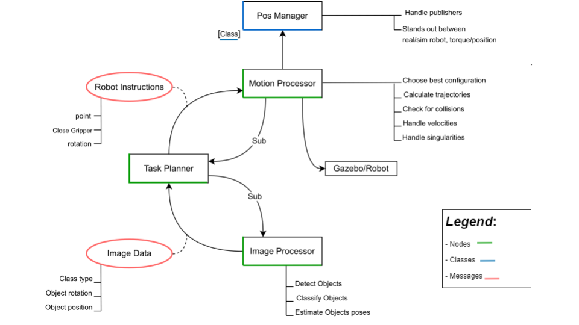
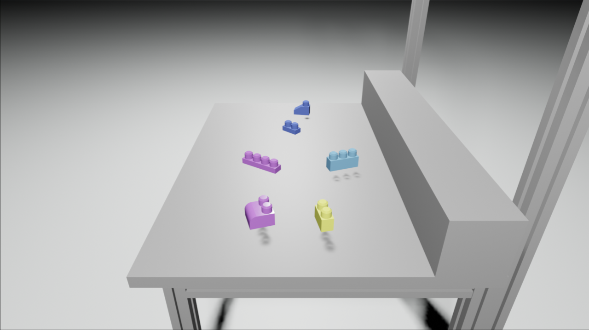
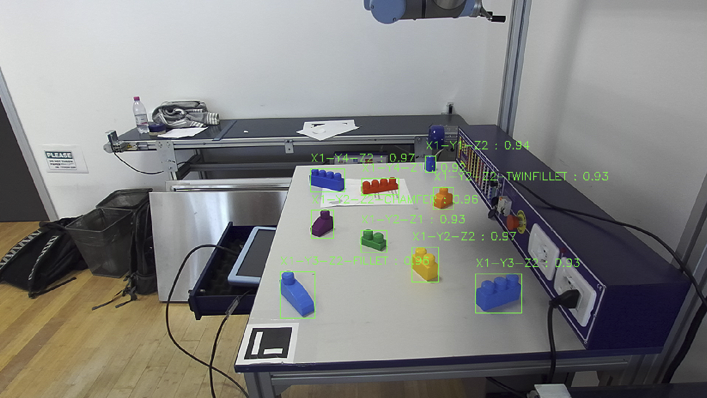
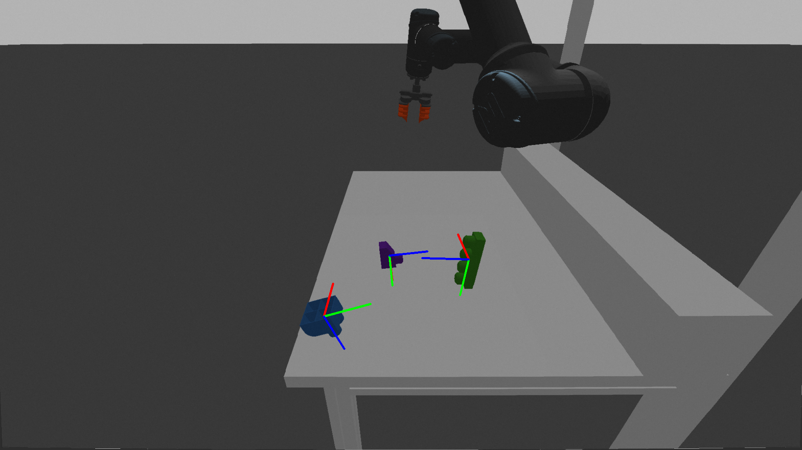

The problem
Robotic matipulators working in assembly line scenarios are generally programmed to perform specific and precise pre-defined sequencies of actions in orther to achieve their goal... But that's not always the case! What if the workspace is non-static and the robot needs to first assess the situation and then act as a consequence? That's the type of sceraio we're dealing with in this project.
We dispose of
- UR5 manipulator
- ZED2 RGBD camera
- a bag of Mega Blocks with the corresponding 11 possible 3d model shapes
Addressing the problem
ROS is our backbone frame to develop the blocks which will compose the whole system :

There are basically 3 main nodes handling the majour challenges we need to face :
Image processor : in charge of classifying the objects and estimate their position & rotation in space
Motion processor : in charge of handling the robot's kinematics (trajectory computation, collision detection, ...)
Task planner : intermediate node which instructs the robot given the current environment situation
Computer vision
Nowadays the image classification task is fairly easy one, with deep models such as YOLO capable of performing accurate detection on real time systems.
The first problem we're facing is that those models require good, labelled data to perform well.
What we decided to do was making use of the 3d models we had to generate our data syntetically inside Blender, which is perhaps the most famous 3d modelling software on the market.
For this reasons a replica of the real world setting has been modelled inside of Blender togheter with a script able to automatically render and annotate YOLO friendly images showing random displacements of the 3d models, varrying also other scene's parameters.

After training on a fully synthetic dataset the YOLO classifier proved to be generalize well also in the real world

Obtaining the object's position after a good detection step is easy since the ZED2 camera dispose of a depth sensor, which makes the job easier, but we still need to acquire the objects 3d rotation in space.
The easier way of achieve so would probably we to use a different deep architecture and feed it with also the rotation information, but we decided to go for another way.
What we do is basically consider the point cloud captured by the ZED2 inside an object's bounding box, then we sample a good ammount of points from the corresponding class object's 3d model and interpolate these 2 sets pointcloud via extracting the FPFH features, running RANSAC and refining it's computation with ICP.
As long as the 3d models are accurate enough and the ZED2 captures a decent amount of points relative to the object we're able to extract the rotation matrix generated by the pointcloud interpolation and use it as the object's rotation.

Motion processors
Follows the dynamics schema we opted for :